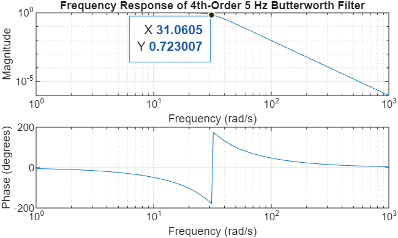
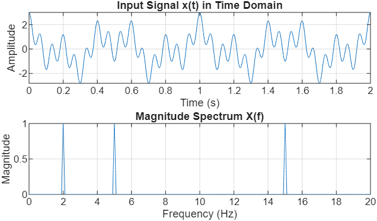
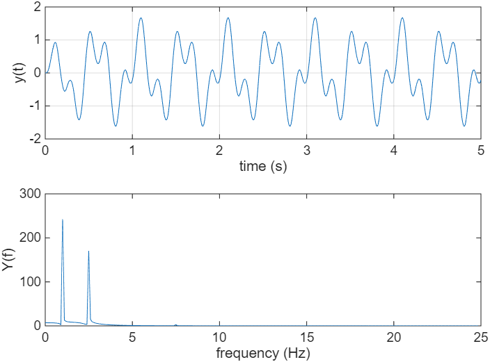
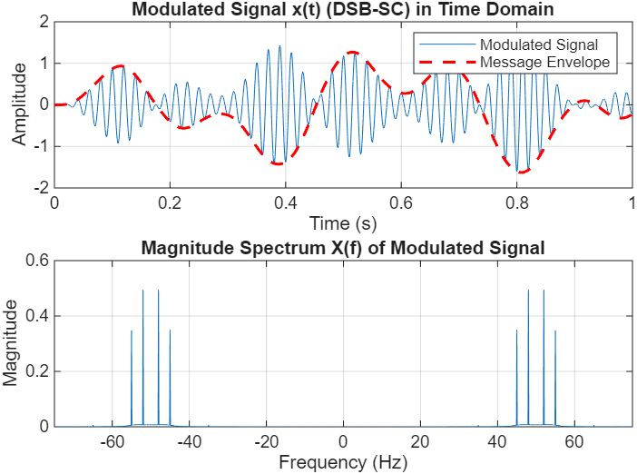

Demodulation#
1. Intoduction#
In modern communication, baseband signals (like voice or music) are rarely transmitted directly. Instead, they are shifted to higher frequencies to allow for efficient transmission and to enable multiple signals to share the same medium without interference—a process called Frequency Division Multiplexing (FDM).
However, a speaker or a digital audio player cannot use the high-frequency modulated signal directly. We must perform demodulation to shift the spectrum of the signal back to the baseband.
In this project, we explore the process of extracting original information from a modulated carrier—a fundamental operation in communication systems known as demodulation. The goal is to develop an intuition for frequency shifting and filtering by successfully recovering three distinct audio files from a single composite signal.
1. Signal Specifications#
For this project, we are working with high-fidelity signals:
Sampling Frequency for Simulation (\(f_{sim}\)): \(441,000\) Hz
Message Duration: \(10\) seconds
Message Bandwidth: \(5\) kHz (All original audio is band-limited to \(5\) kHz)
2. Part I: Walkthrough — Filter Design and Modulation#
The following steps demonstrate how to synthesize a A4 piano tone, design a Butterworth low-pass filter (LPF), and modulate the signal.
This section provides a detailed walkthrough of designing and testing a continuous-time filter. In this curriculum, we treat filters not as algorithms, but as physical LTI systems characterized by their Laplace Transfer Function \(H(s)\).
2.1 Analog Filter Design and Testing#
To restrict our signal’s bandwidth, we use a Butterworth filter, known for its “maximally flat” response. This means it maintains a very consistent gain across the frequencies we want to keep (the passband) before rolling off at the cutoff.
Step 1: Defining the Transfer Function#
We begin by designing a 4th-order Analog Butterworth Filter with a cutoff frequency \(f_{co} = 5\) Hz. We translate this frequency into radians per second (\(\Omega_{co} = 2\pi f_{co}\)) to work within the Laplace domain.
%% 1. Analog Filter Design Configuration
clear; clc; close all;
fco = 5; % Cutoff frequency in Hz
Wco = 2 * pi * fco; % Convert Cutoff to radians/second (approx 31.4 rad/s)
% Design the filter: 's' indicates an analog (Laplace) design rather than digital
[b, a] = butter(4, Wco, 's');
% Create the Transfer Function H(s) = B(s)/A(s)
H = tf(b, a);
%% 2. Visualizing the System Characteristics
figure;
freqs(b, a); % Plots magnitude and phase on log-scales
grid on;
title('Frequency Response of 4th-Order 5 Hz Butterworth Filter');
Fig. 1 illustrates the magnitude and phase response. By inspecting the curve at \(5\) Hz (\(31.415\) rad/s), you will observe a gain of approximately \(-3.0\) dB. In linear terms, this is \(|H(j\Omega_{co})| = 1/\sqrt{2} \approx 0.707\), which is defined as the point where the signal power is halved.
{kind=link}

Fig. 1 Magnitude and Phase response of a 4th-order analog Butterworth filter with a 5 Hz (-3 dB) cutoff frequency.#
Step 2: Synthesizing a Test Signal#
To verify the filter’s performance, we create an input signal \(x(t)\) consisting of three distinct frequencies: one well within the passband (\(2\) Hz), one exactly at the cutoff (\(5\) Hz), and one in the stopband (\(15\) Hz).
%% 3. Signal Synthesis and Spectral Analysis
fs_sim = 441000; % High sampling rate for continuous-time simulation
T = 10; % 10-second duration
t = 0:1/fs_sim:T-1/fs_sim; % Time vector
L = length(t); % Length of signal
f = (0:L-1)*(fs_sim/L); % Frequency vector for plotting
% Create a signal with three distinct frequency components
x = cos(2*pi*2*t) + cos(2*pi*5*t) + cos(2*pi*15*t);
% Compute the Magnitude Spectrum using the Fast Fourier Transform (FFT)
X = abs(fft(x));
figure;
subplot(2,1,1); plot(t, x);
title('Input Signal x(t) in Time Domain');
xlabel('Time (s)'); ylabel('Amplitude');
grid on; xlim([0 2]); % Zoom in to see the individual oscillations
subplot(2,1,2); plot(f(1:floor(L/2)), X(1:floor(L/2))/L*2);
title('Magnitude Spectrum X(f)');
xlabel('Frequency (Hz)'); ylabel('Magnitude');
xlim([0 20]); % Focus on our area of interest
grid on;
As shown in Fig. 2, the input spectrum shows three equal spikes. Note that even though we are using the fft (a tool often used in digital contexts), we use a very high sampling rate (\(f_{sim}=441\) kHz) to accurately approximate the behavior of the continuous-time signal.
{kind=link}

Fig. 2 Time-domain waveform and magnitude spectrum of the composite input signal showing components at 2 Hz, 5 Hz, and 15 Hz.#
Step 3: Simulating the LTI System Response#
Finally, we pass our signal through the filter. Since \(H(s)\) represents a continuous-time system (often implemented physically with resistors, capacitors, and op-amps), we use the conv function to simulate the output \(y(t)\).
%% 4. LTI System Simulation
% Truncate impulse response (finite-duration approximation)
t_h = 0:1/fs_sim:0.5; % 500 ms window
h = impulse(H, t_h);
% Normalize for unity DC gain
h = h / (sum(h)/fs_sim);
% Continuous-time filtering via convolution:
% 'same' keeps output length equal to input (matches t),
% division by fs_sim approximates the CT integral from the sum
y = conv(x, h, 'same') / fs_sim;
% Compute the Spectrum of the filtered output
Y = abs(fft(y));
figure;
subplot(2,1,1); plot(t, y);
title('Filtered Output Signal y(t)');
xlabel('Time (s)'); ylabel('Amplitude');
grid on; xlim([0 2]);
subplot(2,1,2); plot(f(1:floor(L/2)), Y(1:floor(L/2))/L*2);
title('Magnitude Spectrum Y(f) After Filtering');
xlabel('Frequency (Hz)'); ylabel('Magnitude');
xlim([0 20]);
grid on;
Step 4: Observations and Analysis#
The results in Fig. 3 confirm the filter’s performance:
Passband: The \(2\) Hz component is almost entirely preserved.
Cutoff: The \(5\) Hz component has been scaled by \(0.707\) (the \(-3\) dB point).
Stopband: The \(15\) Hz component has been significantly attenuated, effectively removed from the output.
{kind=link}

Fig. 3 Filtered output showing the preservation of the 2 Hz signal, the 3 dB attenuation of the 5 Hz signal, and the removal of the 15 Hz component.#
2.2 Double-Sideband Suppressed Carrier (DSB-SC) Modulation#
Once the message signal \(m(t)\) has been appropriately band-limited by a low-pass filter, the next stage in the communication chain is modulation. Modulation is the process of shifting the message spectrum to a higher frequency range, allowing for efficient transmission over physical media.
In this project, we focus on Double-Sideband Suppressed Carrier (DSB-SC) modulation. This is achieved by multiplying the filtered message \(m(t)\) by a high-frequency sinusoidal carrier \(\cos(2\pi f_c t)\).
Step 1: Theoretical Foundation#
The Modulation Theorem (or Frequency Shifting Property) of the Fourier Transform states that multiplication by a cosine in the time domain results in a shift in the frequency domain:
This mathematical operation creates two “sidebands”, one above the carrier frequency and one below, while the carrier itself is “suppressed” because it does not appear as a standalone impulse in the spectrum unless explicitly added.
Step 2: Implementation in MATLAB#
To visualize this effect clearly, we will use the filtered output \(y(t)\) from Subsection 2.1 as our message signal and modulate it using a carrier frequency \(f_c = 50\) Hz.
%% 1. Modulation Configuration
fc = 50; % Carrier frequency (50 Hz) for clear visualization
carrier = cos(2*pi*fc*t); % Generate the continuous-time carrier wave
% Perform modulation via element-wise multiplication
x_modulated = y .* carrier;
%% 2. Spectral Analysis of the Modulated Signal
% Compute the magnitude spectrum of the modulated signal
% Use fftshift to center the spectrum at 0 Hz for easier interpretation
X_mod_freq = abs(fftshift(fft(x_modulated)));
f_shifted = (-L/2:L/2-1)*(fs_sim/L); % Centered frequency axis
%% 3. Visualizing the Modulation Results
figure;
% Time Domain Plot
subplot(2,1,1);
plot(t, x_modulated);
hold on;
plot(t, y, 'r--', 'LineWidth', 1.5); % Plot original message as the envelope
title('Modulated Signal x(t) (DSB-SC) in Time Domain');
xlabel('Time (s)'); ylabel('Amplitude');
legend('Modulated Signal', 'Message Envelope');
grid on; xlim([0 1]); % Zoom in to see the carrier oscillations
% Frequency Domain Plot
subplot(2,1,2);
plot(f_shifted, X_mod_freq/L*2);
title('Magnitude Spectrum X(f) of Modulated Signal');
xlabel('Frequency (Hz)'); ylabel('Magnitude');
xlim([-75 75]); % Focus on the shifted sidebands around +/- 50 Hz
grid on;
Note
In MATLAB, the fft function returns a spectrum where the frequency components are ordered starting from 0 Hz up to the sampling frequency fs. This places the negative frequencies at the end of the array. The fftshift function is necessary to swap the left and right halves of the data, centering the 0 Hz component. This allows us to plot a standard double-sided spectrum that matches the mathematical convention of being centered at the origin.
Step 3: Observations and Analysis#
Fig. 4 illustrates the transformation. In the time domain, the high-frequency carrier is “shaped” by the amplitude of the message. In the frequency domain, you can observe that the original 2 Hz and 5 Hz components no longer reside near 0 Hz; they have been shifted and are now centered at \(\pm 50\) Hz.
{kind=link}

Fig. 4 Time-domain modulated waveform and the corresponding magnitude spectrum showing the message shifted to the 50 Hz carrier frequency.#
The modulation process provides several key insights:
Spectrum Centering: The baseband signal (originally \(0 \pm 5\) Hz) now occupies the frequency band from \(45\) Hz to \(55\) Hz (and a mirror image in the negative frequencies).
Bandwidth Doubling: While the original message was band-limited to \(5\) Hz, the modulated signal occupies a total bandwidth of \(10\) Hz (\(55 - 45 = 10\)). This is a fundamental characteristic of double-sideband modulation.
3. Part II: The Demodulation Challenge#
In a communication system, multiple messages are often sent over the same medium by shifting each to a unique frequency “slot.” You are provided with a file named modulated_signals.mat. This file contains a composite signal, x_composite, which is the sum of four different audio messages modulated onto high-frequency carriers (\(f_{c1}\) through \(f_{c4}\)).
To accurately represent these continuous-time carriers (which reside between 70 kHz and 120 kHz), the simulation uses a sampling rate of fs_sim = 441 kHz.
3.1 Spectral Discovery and Loading#
Your first task is to load the data and “scout” the frequency spectrum to estimate the four unknown carrier frequencies.
%% 1. Load the Composite Signal
clear; clc; close all;
load('modulated_signals.mat');
% Variables loaded: x_composite, t, fs(44.1 kHz), fs_sim (441 kHz)
%% 2. Spectral Analysis
L = length(x_composite);
f_axis_khz = (-L/2:L/2-1)*(fs_sim/L)/1000;
% Note: fftshift is required to center the spectrum at 0 Hz
X_spec = abs(fftshift(fft(x_composite)))/L;
figure;
plot(f_axis_khz, X_spec, 'LineWidth',1.2);
title('Composite FDM Spectrum');
xlabel('Frequency (kHz)'); ylabel('Magnitude');
grid on;
xlim([60 120]); % Zoom in on the broadcast band
3.2 Synchronous Demodulation Procedure#
Once you have estimated the four carrier frequencies from your plot, you must implement a Synchronous (Coherent) Demodulator for each signal.
Mixing: Multiply
x_compositeby a local carrier \(\cos(2\pi f_{ci} t)\) at your estimated frequency.LTI Filtering: Use the
convcommand with your 4th-order Analog Butterworth LPF (\(H\)) from Part I to isolate the baseband audio.Normalization and Playback: Scale the resulting signal to a maximum amplitude of 1.0 using
y = y / max(abs(y))before listening withsoundsc(y, fs).Downsample the recovered signal from 441.0 kHz to 44.1 kHz for listerning using
m = resample(recovered, 1, 10)You can play sound by running
soundsc(m, fs)
4. Deliverables#
Project Report#
Your project report must include the following four sections:
Carrier Estimation: Provide the magnitude spectrum of
x_compositewith all four estimated carrier frequencies (\(f_{c1}, f_{c2}, f_{c3}, f_{c4}\)) clearly labeled.Signal Recovery and Identification: For each of the four recovered signals, include a figure containing:
The time‑domain waveform \(y_i(t)\)
The magnitude spectrum \(Y_i(f)\) showing the recovered baseband audio
A brief description of the audio content (e.g., “This is my voice,” “I love ECE 333”)
Interference and Bandwidth Diagnostic:
During recovery, you will notice that two signals contain audible interference. The issue is that one of the signals was incorrectly filtered during modulation and has a bandwidth of 7 kHz instead of the standard 5 kHz. Identify which signal is the culprit. Use your spectral plots to visually demonstrate how this “wide” signal interferes with another channel. Discuss how the overlap of sidebands in the frequency domain affects audio quality.Discussion Questions:
Filter Order Impact: If you used an 8th‑order filter instead of a 4th‑order filter for your LPF, would the interference caused by the incorrectly filtered signal improve or worsen? Explain your reasoning.
Frequency Offset: If your local oscillator frequency \(f_{ci}\) is off by 200 Hz (e.g., 87.2 kHz instead of 87 kHz), describe the effect on the recovered audio’s pitch and clarity.
Project Code and Audio Files#
MATLAB Code: Submit your MATLAB code on Gradescope.
Audio Files: Submit four demodulated audio files.